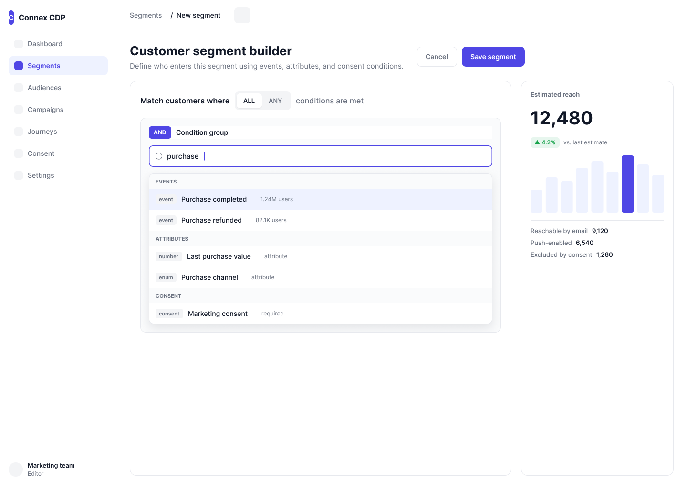

Customer Data Platform
The setup
A customer data platform for marketing teams. Segments, consent rules, campaign conditions, journey logic — layers of data that had to become something a marketer could scan, configure, and trust.
The interface already existed. It worked. But "works" and "works confidently" are different things.
A marketer could build a segment from event conditions, nest AND/OR groups three levels deep, and never know that the logic quietly resolved to zero people.
That was the problem.
What was locked
- Legacy data schemas and variable mappings — untouchable.
- Backend logic constraints — what the system could actually query.
- No complete rebuild. Limited dev resources. Improve what exists.
What I actually did
Search that shows what you're choosing
The event catalog was large and growing. A plain dropdown meant scrolling through hundreds of entries hoping the name looked right.
A categorized auto-complete selector with metadata visible inside each result row — so a marketer could verify a selection without leaving the search.
A richer selector is heavier to specify and build. Every empty state, loading state, and overflow case needed explicit rules.
Nested logic that doesn't overflow the screen
Condition groups needed AND/OR nesting — 2 to 3 levels deep. On a 1440px workspace, deep nesting breaks fast.
Conditions structured as logical cards separated by distinct operator blocks, enforced on an 8px spacing standard with strict horizontal sizing rules.
Hard sizing limits how deep nesting can go before the UI has to summarize instead of display.
Specs that answer the questions devs actually ask
Dynamic inputs changed behavior based on selected conditions. Without explicit specs, developers had to guess — and every guess became a QA ticket.
I mapped button states, focus rings, validation alerts, and input adapters per data variable into interactive spec documents.
More upfront design work before any code gets written. But fewer conversations that start with "what should this do when…"
Evidence

Fig 1.1 — Segment builder workspace: structured event and condition setup.
Fig 2.1 — Advanced search selector: categorized auto-complete with metadata rows.
Fig 2.2 — Nested query blocks: AND/OR logic groups with spacing parameters.
Fig 2.3 — Handoff specs: component layouts, interaction states, edge cases.
What I'd do differently
The riskiest moment in this tool is invisible: a marketer builds conditions that resolve to zero people and launches an empty campaign without knowing. I'd add a validation layer — a check that warns before nothing goes out to nobody. I'd also watch how deep real users actually nest their groups. I designed for 2–3 levels. I don't know if that matches how people really work.